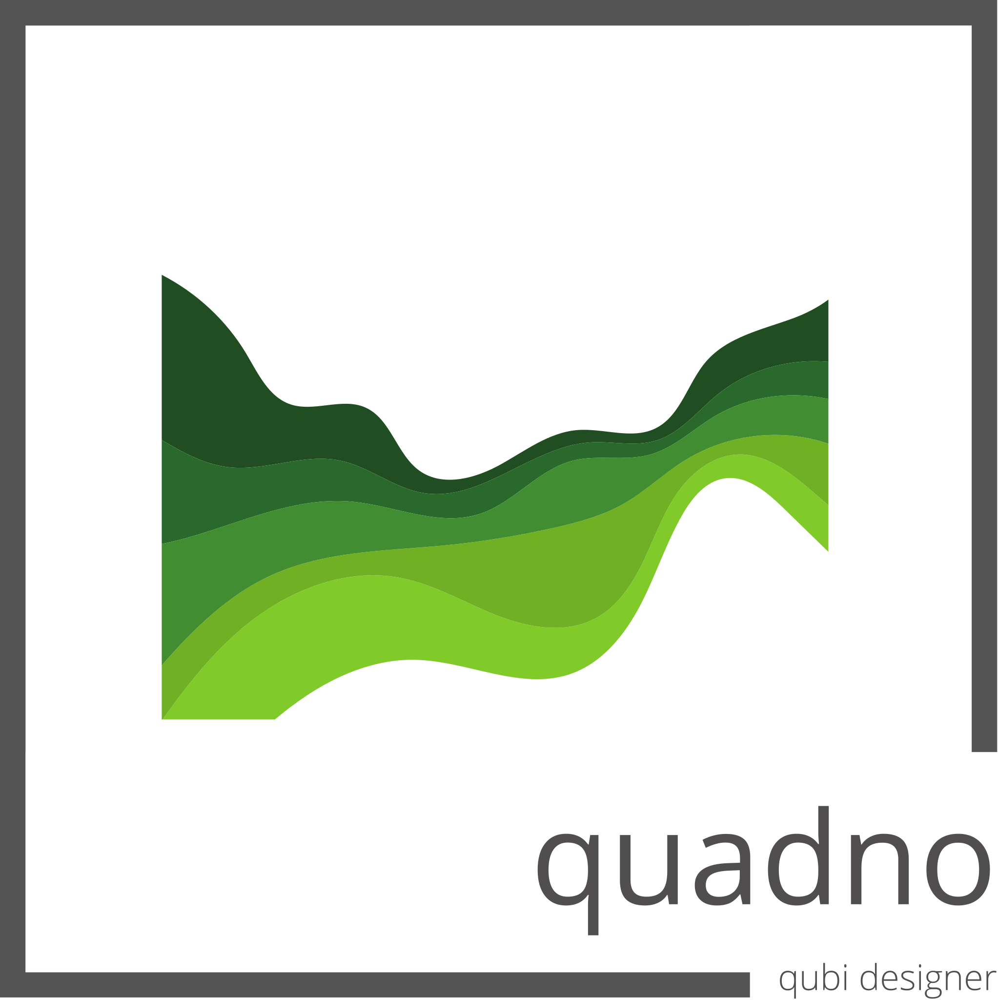
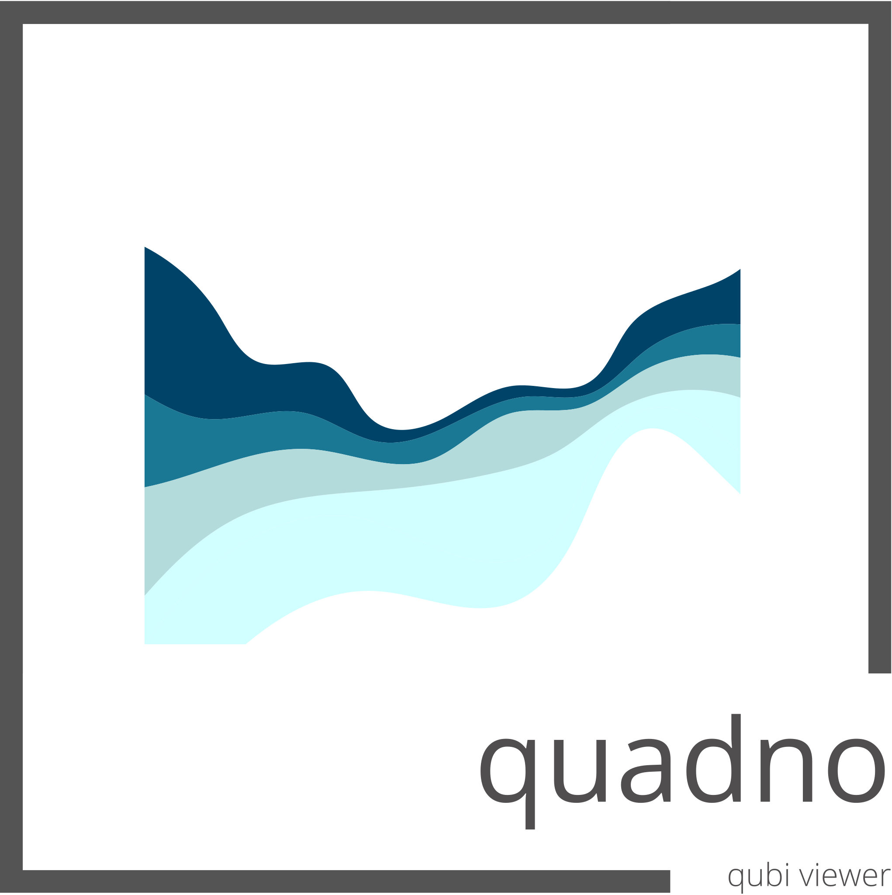
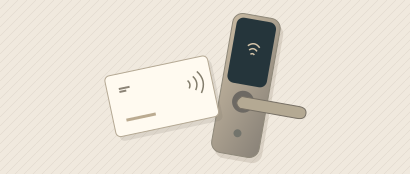
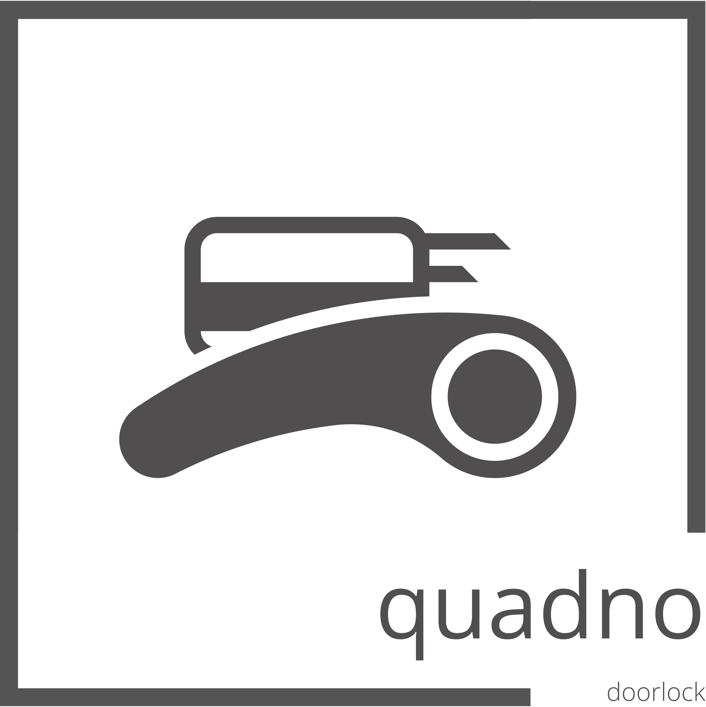

Soruyu yorumlar
“Ekim ayında otel bazında kaç oda gecesi sattık?” sorusunda yerel model, ölçü olarak satılan oda gecesini, gruplama olarak oteli ve dönem olarak ekim ayını belirler.
Otel verileriniz kurumunuzda kalır. QUBI AI, sorunuzu yerel dil modeliyle yorumlar. Gelir, doluluk ve satış kanalı analizlerini örnek verilerle keşfedin.
Haftalık doluluk
Bir otel ve hafta seçin. Göstergeler arasından seçim yaparak günlük sonuçları karşılaştırın veya QUBI AI’a örnek bir soru sorun.
Satılan oda gecesindeki pay
Seçtiğiniz dönem ve otel üzerinden ilerleyin.
QUBI AI, otel verilerini analiz etmek için buluttaki bir yapay zekâ servisine açmaz. Soruyu yorumlayan dil modeli kurumun kendi ortamında çalışır. Raporun rakamlarını ise QUBI veri modeli hesaplar.
“Ekim ayında otel bazında kaç oda gecesi sattık?” sorusunda yerel model, ölçü olarak satılan oda gecesini, gruplama olarak oteli ve dönem olarak ekim ayını belirler.
Bu seçimler QUBI raporlama modeline uygulanır. Sorgu, kullanıcının erişebildiği rapor ve otel kapsamındaki verilerle çalışır. Gelir ve doluluk gibi ölçüler mevcut rapor tanımlarına göre hesaplanır.
Otel bazındaki sonuçları seçtiğiniz dönemle birlikte inceleyebilirsiniz. Bir değişimi araştırırken aynı ölçüyü önceki dönemle karşılaştırabilir veya satış kanalı bazında yeniden sorabilirsiniz.
Sitedeki demo, kurgusal otel verileriyle tarayıcınızda çalışır. Örnek soruların yanıtlarını görmek için oteli veya haftayı değiştirin.
Raporu hazırlayan analistten onu sabah toplantısında kullanan yöneticiye, her rol için farklı bir araç.

Rapor tasarımıYöneticinin sorusunu yanıtlayan panoyu oluşturun. Göstergeleri, grafikleri ve filtreleri aynı raporda düzenleyin.

Performans analiziPano üzerinde otel, tarih ve kanal seçin. Veriyi inceleyin veya QUBI AI ile bir yönetim sorusu sorun.

Q / 03
Otel operasyonuOtel kapı kilitlerine yönelik Quadno çözümü. Tesisinizdeki kilit altyapısını ve kullanım senaryosunu birlikte değerlendirelim.
Quadno Teknoloji A.Ş., konaklama sektörü için yazılım geliştirir. Bir resepsiyon ekibi için gün, giriş yapacak odalarla başlar. Gelir yöneticisi aynı güne satılan oda ve ortalama fiyat üzerinden bakar.
QUBI, bu farklı soruları ortak bir veri modeli üzerinde bir araya getirir. Designer raporun nasıl hazırlanacağını, Viewer ise yetkili ekiplerin o raporu nasıl inceleyeceğini belirler.
Ekibimizle görüşünGörmek istediğiniz raporu veya tesisinizdeki ihtiyacı anlatın. Ekibimiz size bıraktığınız e-posta adresinden ulaşabilir.
admin@quadno.com